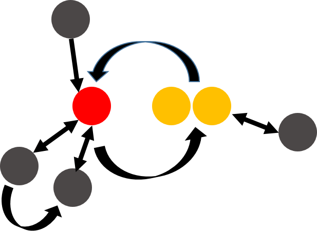
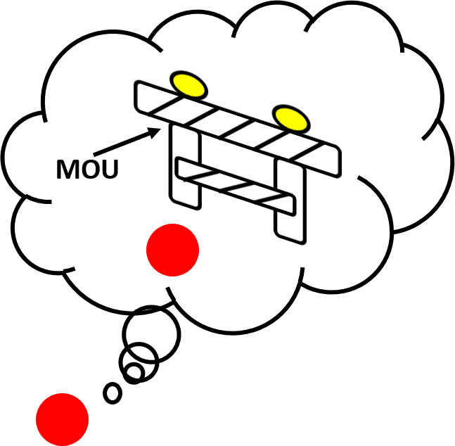

Memorandum of Understanding Workshop
Creating a Process for Successful Digital Collaboration
Rafia Mirza · Brett D. Currier · Peace Ossom Williamson
Digital Initiatives Symposium - April 27, 2016
pow123.github.io/mouworkshop/#/
This presentation is licensed under Creative Commons Attribution-NonCommercial 4.0
International Public License. https://creativecommons.org/licenses/by-nc/4.0/
Who we are
Rafia Mirza
Digital Humanities Librarian
rafia@uta.edu · @librarianrafia
Brett D. Currier
Director of Scholarly Communications
brett.currier@uta.edu · @brettdcurrier
Peace Ossom Williamson
Research Data Librarian & Health Sciences Liaison
peace@uta.edu · @123POW

Origin

National theme
Traditionally, librarians engaged in transactional service.
Many of us are beginning to engage in collaborative work. 
Local need

At the beginning of a project
External partners may have
- Expectations that are higher than possible
- Expectations that technology does not allow
- Expectations that do not coincide with strategic priorities
- Expectations that are unfair
Librarians tend to have
- Inclinations toward saying, "yes"
- Inclinations toward gold-plating
- Inclinations toward not expecting shared credit
- Inclinations toward providing seamless (invisible) service
Resistance to adoption
During and after implementation
- Attribution
- Publication
- Conference presentation
- Grant application
- Funding allocation
- Disruption
Workflow

Project templates
Workbook Contents
Introduction
MOU Documents
· Workflow & Instructions
· General Template & Instructions
· Estimate of Institutional Support & Instructions
MOUs for Standardized Projects
· Systematic Reviews
· Open Access eJournal Hosting & Publishing